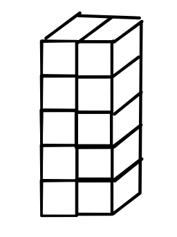
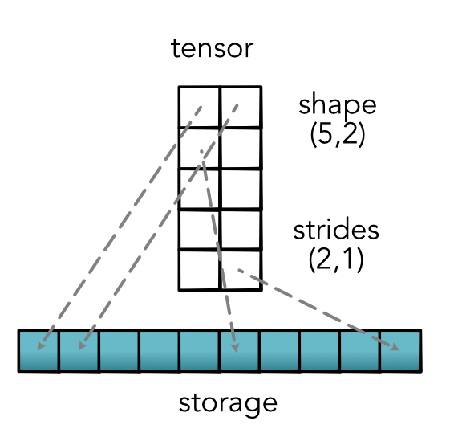
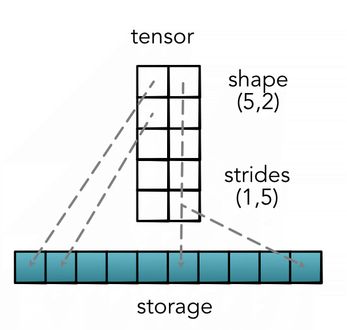
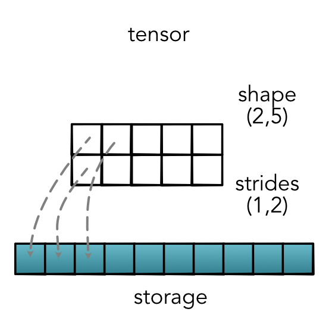
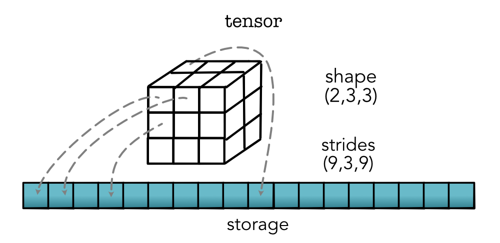

Machine Learning Engineering
Lecture 11
Tensor Data
Class Details
Module-1 Answers released
Module-2 out
Roadmap
Module-2 - Tensors / Neural Nets
Module-3 - Low-level (GPU / Opt)
Module-4 - End-to-End Training
...
Lecture
Outline
Review: Tensors
Views
Strides
Tensors
Request
No autodifferentiation for now
Only consider standard tensor operations
Add autodiff afterwards
Terminology
2-Dimensional - Matrix
Terminology
Arbitrary dimensions - Tensor
Terminology
Dims - # dimensions (tensor.dims)
Shape - # cells per dimension (tensor.shape)
Size - # cells (tensor.size)
Example
dims: 2 / shape: (2, 5) / size : 10
Shape Maniputation
Permutation
tensor.permute(1, 0)


Shape Maniputation
Views
tensor.view(1, 5, 2)

Lecture Quiz
Views
Goal
Support user api
Keep track of tensor properties
Setup fast / simple Functions
Tensor Usage
Unary
new_tensor = tensor.log()Binary (for now, only same shape)
new_tensor = tensor1 + tensor2Reductions
new_tensor = tensor.sum()Why not lists?
Matrix (5, 2):
matrix = [[1, 2], [3, 4], [5, 7], [2, 3], [2, 4]]View (1, 5, 2)
tensor = [[[matrix[j][i] for i in range(2)]
for j in range(5)]]Transpose (2, 5)
matrix_trans = [[matrix[i][j] for i in range(5)]
for j in range(2)]Issues
Operators requires copying
matrix_trans = [[matrix[i][j] for i in range(5)] for j in range(2)]Storage shaped based on usage
tensor = [[[matrix[i][j] for i in range(2)] for j in range(5)]]
Idea 1: Views
Seperate storing information from user view
Keep a mapping from users version to storage
Idea 2: Immutable Operations
Minitorch doesn't let you update tensors
All operations return a "new" tensor
Since there are no updates, maybe point to the same storage.
Tensor Internals
How does this work
Storage : 1-D array of numbers of length size
Strides : tuple that provides the mapping from user indexing to the position in the 1-D storage.
Strides
{kind=link}
Strides
{kind=link}
Strides
{kind=link}
Which is best?
Can be useful when it is contiguous
Bigger strides left
Strides
Silly Stride Intuition
Numerical bases, binary number
1101011
Implied strides: (64, 32, 16, 8, 4, 2, 1)
Stride Math
Calculating from strides
s1 * index1 + s2 * index2 + s3 * index3 ...Key Operations
Map from index to position (binary -> decimal)
Map from position to index (decimal -> binary)
Implementation
TensorData : Manager of strides and storage